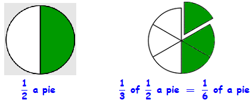
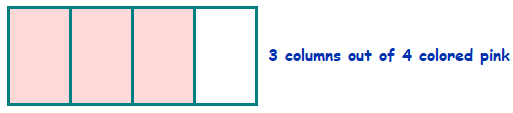
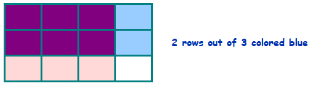
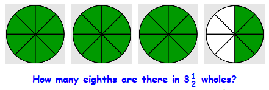
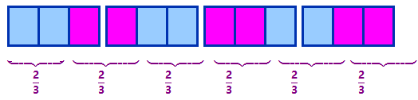
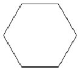
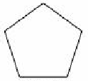

Section 4.2 Multiplying and Dividing Fractions
Subsection 4.2.1 Take Part
What does it mean to take \(\dfrac{1}{3}\) of something? It means to divide the quantity by 3. For instance, to take \(\dfrac{1}{3}\) of 12 eggs, we divide 12 by 3 and take 4 eggs.
The same is true if we take \(\dfrac{1}{3}\) of a fraction. For example, to take \(\dfrac{1}{3}\) of half a pie, we divide the half pie into 3 pieces.

These examples suggest that to take \(\dfrac{1}{3}\) of a fraction we can multiply the fraction by \(\dfrac{1}{3}\text{,}\) like this:
\begin{equation*}
\dfrac{1}{3} \times \dfrac{1}{2} = \dfrac{1 \times 1}{3 \times 2} = \dfrac{1}{6}~~~~~~\blert{\dfrac{\text{Multiply the numerators together.}}{\text{Multiply the denominators together.}}}
\end{equation*}
To multiply two fractions together.
Multiply the numerators together.
Multiply the denominators together.
Example 4.2.2.
Multiplying by \(\dfrac{1}{3}\) also works to find \(\dfrac{1}{3}\) of a dozen eggs, if we write 12 as a fraction, \(\dfrac{12}{1}\text{.}\)
\begin{equation*}
\dfrac{1}{3} \times \dfrac{12}{1} = \dfrac{1 \times 12}{3 \times 1} = \dfrac{12}{3} =4 ~~~~~~\blert{\dfrac{\text{Multiply the numerators together.}}{\text{Multiply the denominators together.}}}
\end{equation*}
In other words, to take \(\dfrac{1}{3}\) of something, we can \(\blert{\text{multiply}}\) by \(\dfrac{1}{3}\text{.}\)
Of course, the same idea works if we want to take \(\dfrac{1}{4}\) of something, or \(\dfrac{1}{5}\) of something, or \(\cdots\) .
Checkpoint 4.2.3.
Multiply fractions to answer the question.
How many yards are there in \(\dfrac{1}{4}\) of a mile? (There are 1760 yards in 1 mile.)
-
Josie has \(2\dfrac{1}{4}\) chocolate bars to share equally among 6 children. What fraction of a chocolate bar will each child get?
Hint: Rewrite \(2\dfrac{1}{4}\) as an improper fraction.
Answer.
440
\(\displaystyle \dfrac{3}{8}\)
Subsection 4.2.2 Multiplying by a Fraction
What does it mean to take \(\dfrac{2}{3}\) of something? It means to divide the quantity into 3 equal parts, and then take 2 of them. For instance, to take \(\dfrac{2}{3}\) of 12 eggs, we divide 12 into 3 groups of 4eggs each, and take 2 of those groups of 4 eggs, to get 8 eggs.
Mathematically, we divide 12 by 3 and then multiply the result by 2. Earlier we saw that dividing by 3, or taking \(\dfrac{1}{3}\) of something, is the same as multiplying by \(\dfrac{2}{3}\text{.}\) Is taking \(\dfrac{2}{3}\) of something the same as multiplying by \(\dfrac{2}{3}\) ? Yes! Observe:
\begin{equation*}
\dfrac{2}{3}~ \text{of} ~12 = \dfrac{2}{3} \times \dfrac{12}{1} = \dfrac{2 \times 12}{3 \times 1} = \dfrac{24}{3} = 8
\end{equation*}
We can also multiply by \(\dfrac{2}{3}\) to take \(\dfrac{2}{3}\) of a fraction.
Example 4.2.5.
There was \(\dfrac{3}{4}\) of a pizza left in the refrigerator last night, but somebody ate \(\dfrac{2}{3}\) of it. How much of a whole pizza did they eat?
Solution.
We want to find \(\dfrac{2}{3}\) of \(\dfrac{3}{4}\text{,}\) so we multiply the fractions together.
\begin{equation*}
\dfrac{2}{3} \times \dfrac{3}{4} = \dfrac{2 \times 3}{3 \times 4} = \dfrac{6}{12} = \dfrac{1}{2}
\end{equation*}
Whoever ate the pizza ate \(\dfrac{1}{2}\) of a whole pizza. In the picture, you can see that \(\dfrac{3}{4}\) of a pizza has 3 equal parts, each of which is \(\dfrac{1}{4}\) of a pizza. So 2 of those equal parts are \(\dfrac{2}{4}\text{,}\) or \(\dfrac{1}{2}\text{,}\) of a whole pizza.
Here is another way to visualize \(\dfrac{2}{3}\) of \(\dfrac{3}{4}\text{.}\) First, draw a rectangle with 4 vertical slices and color 3 of them red to illustrate \(\dfrac{3}{4}\text{,}\) like this:

Then, use horizontal lines to divide the rectangle into thirds, and color 2 of them blue to show \(\dfrac{2}{3}\) of the rectangle:

The pieces colored both pink and blue illustrate \(\dfrac{2}{3}\) of \(\dfrac{3}{4}\text{.}\) Notice that they make up \(\dfrac{6}{12}\) or \(\dfrac{1}{2}\) of the entire rectangle.
Checkpoint 4.2.6.
Draw rectangles to illustrate the products.
\(\displaystyle \dfrac{1}{2} \times \dfrac{3}{4}\)
\(\displaystyle \dfrac{2}{3} \times \dfrac{2}{3}\)
\(\displaystyle \dfrac{1}{4} \times \dfrac{2}{3}\)
\(\displaystyle \dfrac{5}{8} \times \dfrac{3}{4}\)
Here is another example using multiplication.
Example 4.2.7.
Ronen has \(1\dfrac{1}{2}\) pounds of salmon to feed four people. How much salmon will be in each portion?
A standard portion is 6 ounces. Will Ronen’s salmon provide each person a standard portion?
Solution.
First, let’s write \(1\dfrac{1}{2}\) pounds as a fraction:
\begin{equation*}
1\dfrac{1}{2} = \dfrac{2}{2} + \dfrac{1}{2} = \dfrac{3}{2}
\end{equation*}
Because we are dividing \(\dfrac{3}{2}\) pounds among 4 people, each person gets \(\dfrac{1}{4}\) of that amount. So we multiply \(\dfrac{3}{2}\) by \(\dfrac{1}{4}\text{.}\)
\begin{equation*}
\dfrac{3}{2} \times \dfrac{1}{4} = \dfrac{3 \times 1}{2 \times 4} = \dfrac{3}{8} ~~~~~~\blert{\dfrac{\text{Multiply numerators together.}}{\text{Multiply denominators together.}}}
\end{equation*}
Each person gets \(\dfrac{3}{8}\) of a pound of salmon.
We’d like to know how many ounces are in \(\dfrac{3}{8}\) of a pound. A pound is equal to 16 ounces, so we multiply 16 by \(\dfrac{3}{8}\text{.}\)
\begin{equation*}
\dfrac{3}{8} \times \dfrac{16}{1} = \dfrac{3 \times 16}{8 \times 1} = \dfrac{48}{8} = 6
\end{equation*}
Each person gets 6 ounces of salmon, which is a standard portion.
Checkpoint 4.2.8.
Miranda pays \(\dfrac{2}{15}\) of her income in taxes, and \(\dfrac{5}{12}\) of those taxes go to education. What fraction of Miranda’s income goes to education?
Reduce your answer to part (a).
Answer.
\(\displaystyle \dfrac{10}{180}\)
\(\displaystyle \dfrac{1}{18}\)
Activity 4.2.1. Multiplying Fractions.
Use multiplication to find each fraction. Show your work.
How many cents are there in \(\dfrac{4}{5}\) of a dollar?
The city council wants to clear \(\dfrac{3}{4}\) of an acre of weeds to make a community garden. If 6 people volunteer, how much ground must each person clear?
-
You made a chocolate cake for the Math Club bake sale, but at the end of the day \(\dfrac{3}{8}\) of the cake is left in the pan. You decide to take \(\dfrac{2}{3}\) of the remaining cake home, and give the rest to your math teacher.
How much of the original cake are you taking home?
Illustrate your work with a rectangle.
A recipe for coffee cake calls for \(2\dfrac{2}{3}\) cups of flour and 4 eggs. You only have 3 eggs, so you decide to make \(\dfrac{3}{4}\) of the recipe. How much flour will you need?
Subsection 4.2.3 Dividing by a Fraction
When we divide a number, we are separating it into groups. For example, \(12 \div 4\) means to find how many groups of 4 fit into 12. The answer, of course, is 3; there are 3 groups of 4 in 12.
But how about dividing by a fraction? What does it mean to divide a number by \(\dfrac{1}{3}\text{?}\) (Notice that this is NOT the same as dividing by 3!) For example, \(2 \div \dfrac{1}{3}\) means to find the number of thirds in 2 wholes.
There are 3 thirds in one whole, so in 2 wholes there must be \(2 \times 3 = 6\) thirds. We see that
\begin{equation*}
2 \div \dfrac{1}{3} = 2 \times 3 = 6
\end{equation*}
Example 4.2.10.
Compute \(~3\dfrac{1}{2} \div \dfrac{1}{8}~\text{,}\) and explain what it means.
Solution.
The division asks how many eighths there are in \(3\dfrac{1}{2}\) wholes.

Because there are 8 eighths in one whole, there must be \(3\dfrac{1}{2} \times 8\) eighths in \(3\dfrac{1}{2}\) wholes. So
\begin{equation*}
3\dfrac{1}{2} \div \dfrac{1}{8} = 3\dfrac{1}{2} \times 8 = \dfrac{7}{2} \times \dfrac{8}{1} = \dfrac{56}{2} = 28
\end{equation*}
There are 28 eighths in \(3\dfrac{1}{2}\) wholes.
From the examples above, perhaps you see a method for dividing by a fraction. Try your method in the Checkpoint 4.2.11.
Checkpoint 4.2.11.
Compute the division, and draw a picture to illustrate. Then state in words what the division tells you.
\(\displaystyle 4 \div \dfrac{1}{3}\)
\(\displaystyle \dfrac{3}{2} \div \dfrac{1}{4}\)
\(\displaystyle 1\dfrac{2}{3} \div \dfrac{1}{6}\)
\(\displaystyle 2\dfrac{1}{2} \div \dfrac{1}{8}\)
Answer.
-
\(12\text{.}\) There are 12 thirds in 4.
-
\(6\text{.}\) There are 6 fourths in \(\dfrac{3}{2}\text{.}\)
-
\(10\text{.}\) There are 10 sixths in \(1\dfrac{2}{3}\text{.}\)
-
\(20\text{.}\) There are 20 eighths in \(2\dfrac{1}{2}\text{.}\)
Subsection 4.2.4 More Dividing by Fractions
We now know what it means to divide a number by \(\dfrac{1}{3}\text{,}\) and it turns out that dividing by \(\dfrac{1}{3}\) is the same as multiplying by 3. What does it mean to divide a number by \(\dfrac{2}{3}\text{?}\) Let’s consider \(4 \div \dfrac{2}{3}\text{.}\) This division asks us how many groups of \(\dfrac{2}{3}\) can be made out of 4 wholes.

In the picture, we see that there are 6 groups of \(\dfrac{2}{3}\) in 4 wholes. This tells us that
\begin{equation*}
4 \div \dfrac{2}{3} = 6
\end{equation*}
But how can we calculate this result without the picture? Think about how we made the picture:
First, we separated each whole into thirds. This multiplied 4 wholes by 3, to get 12 pieces.
Then we grouped the 12 pieces into groups of 2 thirds each. This divided the 12 pieces by 2, to get 6 groups.
We started with 4, multiplied by 3, then divided by 2.
It seems that
\begin{equation*}
4 \div \dfrac{2}{3}~~~~~~ \text{is the same as} ~~~~~~ 4 \times \dfrac{3}{2}
\end{equation*}
Let’s check:
\begin{equation*}
4 \times \dfrac{3}{2} = \dfrac{4}{1} \times \dfrac{3}{2} = \dfrac{4 \times 3}{1 \times 2} = \dfrac{12}{2} = 6
\end{equation*}
We have discovered a rule for division by a fraction.
To divide a number by a fraction.
Multiply the number by the reciprocal of the fraction.
Example 4.2.13.
Compute \(~3\dfrac{3}{4} \div \dfrac{3}{8}\)
Solution.
First we’ll write \(3\dfrac{3}{4}\) as an improper fraction. Remember that \(3\dfrac{3}{4}\) means \(\dfrac{3}{1} + \dfrac{3}{4}\text{.}\)
\begin{equation*}
\dfrac{3}{1} + \dfrac{3}{4} = \left(\dfrac{3}{1} \times \dfrac{\alert{4}}{\alert{4}} \right) + \dfrac{3}{4} = \dfrac{12}{4} + \dfrac{3}{4} = \dfrac{15}{4} ~~~~~~ \blert{\text{Build, then add.}}
\end{equation*}
To divide \(\dfrac{15}{4}\) by \(\dfrac{3}{8}\text{,}\) we multiply \(\dfrac{15}{4}\) by \(\dfrac{8}{3}\text{.}\)
\begin{align*}
\dfrac{15}{4} \div \dfrac{3}{8} \amp = \dfrac{15}{4} \times \dfrac{8}{3} = \dfrac{15 \times 8}{4 \times 3} ~~~~~~ \blert{\dfrac{\text{Multiply numerators together.}}{\text{Multiply denominators together.}}}\\
\amp = \dfrac{120}{12} = 10
\end{align*}
So \(3\dfrac{3}{4}\) can be broken into 10 pieces of size \(\dfrac{3}{8}\text{.}\)
Checkpoint 4.2.14.
David has \(4\dfrac{1}{2}\) cans of paint. Each section of his fence needs \(\dfrac{3}{4}\) of a can of paint. How many sections of fence can he paint before he has to buy more?
Activity 4.2.2. Dividing Fractions.
For Problems 1-6,
Divide fractions.
Explain what each division means, and illustrate with rectangles.
\(\displaystyle 4 \div \dfrac{1}{4}\)
\(\displaystyle 3 \div \dfrac{1}{6}\)
\(\displaystyle 4 \div \dfrac{2}{3}\)
\(\displaystyle 6 \div \dfrac{3}{4}\)
\(\displaystyle 1\dfrac{3}{4} \div \dfrac{7}{8}\)
\(\displaystyle 2\dfrac{1}{2} \div \dfrac{5}{6}\)
The City Council plans to set aside \(1\dfrac{1}{2}\) acres of the city park for a community garden. Each allotment will be \(\dfrac{1}{16}\) of an acre in size. How many allotments can they offer?
Here is one more example. It uses several of the skills we’ve learned.
Example 4.2.15.
Carrie has \(2\dfrac{1}{2}\) yards of florist’s ribbon, and each bouquet uses \(\dfrac{3}{4}\) of a yard. How many bouquets can she make?
Solution.
We want to know how many pieces of length \(\dfrac{3}{4}\) of a yard can be cut from \(2\dfrac{1}{2}\) yards, so we will divide \(2\dfrac{1}{2}\) by \(\dfrac{3}{4}\text{.}\) First, we’ll write \(2\dfrac{1}{2}\) as a fraction.
\begin{equation*}
\dfrac{2}{1} + \dfrac{1}{2} = \left(\dfrac{2}{1} \times \dfrac{\alert{2}}{\alert{2}} \right) + \dfrac{1}{2} = \dfrac{4}{2} + \dfrac{1}{2} = \dfrac{5}{2} ~~~~~~ \blert{\text{Build, then add.}}
\end{equation*}
Next, we’ll divide by \(\dfrac{3}{4}\text{.}\)
\begin{align*}
\dfrac{5}{2} \alert{\div \dfrac{3}{4}} \amp = \dfrac{5}{2} \alert{\times \dfrac{4}{3}} ~~~~~~ \blert{\text{Multiply by the reciprocal.}}\\
\amp = \dfrac{5 \times 4}{2 \times 3} = \dfrac{20}{6} = \dfrac{10}{3} ~~~~~~ \blert{\dfrac{\text{Multiply numerators.}}{\text{Multiply denominators.}}}
\end{align*}
Finally, \(\dfrac{10}{3}\) is equal to \(3\dfrac{1}{3}\text{,}\) so Carrie can make \(3\dfrac{1}{3}\) bouquets. Well, actually, she can make 3 bouquets, and has left \(\dfrac{1}{3}\) of the amount for another bouquet. That is \(\dfrac{1}{3}\) of \(\dfrac{3}{4}\) of a yard, or
\begin{equation*}
\dfrac{1}{3} \times \dfrac{3}{4} = \dfrac{3}{12} = \dfrac{1}{4}
\end{equation*}
After making 3 bouquets, she has \(\dfrac{1}{4}\) yard left over.
Subsection 4.2.5 Vocabulary
Exercises 4.2.6 Practice 4.2
1.
Explain why multiplying a number by \(\dfrac{1}{4}\) is the same as dividing the number by 4. Illustrate with a picture of \(\dfrac{1}{4} \times 8\text{.}\)
2.
How many degrees are there in \(\dfrac{1}{8}\) of a rotation? (One rotation is 360 degrees.)
3.
Jaden says that he uses his calcultor to compute \(\dfrac{3}{7}\) of a number as follows: first he divides the number by 7, then he multiplies the result by 3. Explain why his method works.
4.
How many days are there in \(\dfrac{2}{5}\) of a year? (A year is 365 days.)
5.
The City Park in Haverford covers \(3\dfrac{3}{4}\) acres. The city council wants to maintain \(\dfrac{3}{5}\) of the park as open space. How many acres of open space is that?
6.
Five eighths of the employees at Softek have college degrees, and \(\dfrac{2}{3}\) of those with college degrees have advanced degrees. What fraction of all the employees have advanced degrees?
Exercise Group.
For Problems 7-10, illustrate the multiplication with a rectangle.
7.
\(\dfrac{1}{4} \times \dfrac{5}{6}\)
8.
\(\dfrac{4}{5} \times \dfrac{3}{4}\)
9.
\(\dfrac{2}{3} \times \dfrac{6}{8}\)
10.
\(\dfrac{2}{4} \times \dfrac{4}{6}\)
Exercise Group.
For Problems 11-14, multiply. Reduce your answers if possible.
11.
\(\dfrac{1}{3} \times \dfrac{2}{9}\)
12.
\(\dfrac{4}{5} \times \dfrac{3}{7}\)
13.
\(\dfrac{8}{3} \times \dfrac{1}{8}\)
14.
\(\dfrac{1}{4} \times \dfrac{4}{7}\)
Exercise Group.
Problems 15-18 show windows with sides of equal length. Find the length of weather stripping needed to frame the window.
15.
side: \(8\dfrac{7}{8} \) inches
16.
side: \(15\dfrac{3}{4} \) inches

17.
side: \(10\dfrac{3}{16} \) inches

18.
side: \(9\dfrac{9}{10} \) inches
19.
Is \(\dfrac{7}{8} \times \dfrac{10}{9}\) greater or less than \(\dfrac{7}{8}\) ? How do you know?
Is \(\dfrac{7}{8} \times \dfrac{10}{9}\) greater or less than \(\dfrac{10}{9}\) ? How do you know?
20.
Is \(\dfrac{77}{81} \times \dfrac{101}{98}\) greater or less than \(\dfrac{77}{81}\) ? How do you know?
Is \(\dfrac{77}{81} \times \dfrac{101}{98}\) greater or less than \(\dfrac{101}{98}\) ? How do you know?
21.
Write a calculation to find out how many thirds there are in seven-eighths.
22.
Write a calculation to find seven-sixteenths of three-quarters.
23.
Explain why dividing a number by \(\dfrac{1}{5}\) is the same as multiplying the number by 5. Illustrate with a picture of \(4 \div \dfrac{1}{5}\text{.}\)
24.
Explain why dividing a number by \(\dfrac{3}{4}\) is the same as multiplying the number by \(\dfrac{4}{3}\text{.}\) Illustrate with a picture of \(3 \div \dfrac{3}{4}\text{.}\)
Exercise Group.
For Problems 25-28, show your work.
25.
Angela has a 3-pound bag of peppermint candies. She uses it make party favors of \(\dfrac{1}{8}\) pound each. How many party favors can she make?
26.
How many \(\dfrac{3}{4}\)-cup servings of lemonade are in a quart of lemonade? (A quart is 4 cups.) Illustrate with a picture.
27.
A real estate developer buys \(12\dfrac{1}{2}\) acres of land and plans to divide it into lots for houses. Each lot will be \(\dfrac{5}{6}\) of an acre. How many lots will there be?
28.
The county road crew can paint the lines on a stretch of new road at a rate of \(\dfrac{7}{10}\) miles per hour. How long will it take them to paint an \(8\dfrac{3}{4}\) mile section of newly repaired county road?
Exercise Group.
For Problems 29-36, divide. Reduce your answers if possible.
29.
\(\dfrac{16}{9} \div \dfrac{4}{3}\)
30.
\(\dfrac{5}{7} \div \dfrac{20}{21}\)
31.
\(\dfrac{15}{4} \div \dfrac{3}{8}\)
32.
\(\dfrac{28}{3} \div \dfrac{7}{9}\)
33.
\(\dfrac{14}{21} \div 4\)
34.
\(\dfrac{15}{10} \div 9\)
35.
\(\dfrac{5}{3} \div \dfrac{15}{2}\)
36.
\(\dfrac{9}{2} \div \dfrac{3}{8}\)
Exercise Group.
The statements in Problems 37-40 are all \(\alert{\text{false}}\text{.}\) Write a corrected statement for each.
37.
We can only multiply two fractions if they have the same denominator.
38.
To divide fractions, we take the reciprocal of the second fraction and multiply by the reciprocal of the first fraction.
39.
To add two like fractions, we add their denominators and keep the same numerator.
40.
To subtract unlike fractions, we subtract their numerators and their denominators.
Exercise Group.
For Problems 41-44, show your work.
41.
I must cut my calorie intake by \(\dfrac{1}{6}\text{.}\) If I now consume 1800 calories per day, what should my new intake be? What fraction of my old intake is that?
42.
A recipe calls for \(\dfrac{3}{4}\) teaspoon of cinnamon, but only the \(\dfrac{1}{8}\) teaspoon will fit in the jar. How many \(\dfrac{1}{8}\) teaspoons do you need?
43.
Wendell needs \(\dfrac{4}{3}\) ounces of chocolate for each dessert serving. How many servings can he make with 1 pound of chocolate? (There are 16 ounces in 1 pound.)
44.
Callie used to run \(4\dfrac{1}{2}\) miles every morning, but now she only runs \(\dfrac{2}{3}\) of that distance. How far does she run now?
Exercise Group.
For Problems 45-46, answer the questions.
45.
Is \(\dfrac{3}{4} \times \dfrac{5}{6}\) more or less than \(\dfrac{1}{42}\) ? By how much?
46.
Which of the following are the same as \(\dfrac{3}{4} \times \dfrac{1}{2}\) ?
\(\displaystyle 0.75 )\overline{0.5}\)
\(\displaystyle \dfrac{3}{4} \times 2\)
\(\displaystyle \dfrac{3}{8}\)
\(\displaystyle \dfrac{0.75}{0.5}\)
Exercise Group.
For Problems 47-50, find the area and perimeter of each rectangle. Use the formulas
\begin{equation*}
\blert{\text{area } = \text{ length } \times \text{ width}}~~~~~~~~\blert{\text{perimeter } = (2 \times \text{ length} + 2 \times \text{ width})}
\end{equation*}
47.
A computer chip is \(2\dfrac{1}{4}\) centimeters long and \(\dfrac{7}{8}\) centimeters wide.
48.
A wildlife preserve is \(\dfrac{1}{2}\) mile long and \(\dfrac{1}{2}\) mile wide.
49.
A baking pan is \(7\dfrac{3}{4}\) inches wide long and \(5\dfrac{1}{4}\) inches wide.
50.
An executive desktop is \(2\dfrac{1}{8}\) yards long and \(1\dfrac{1}{3}\) yards wide.
Exercise Group.
For Problems 51-54, fill in the box with the correct number.
51.
\(\displaystyle \dfrac{7}{8} \times \boxed{?} = 1\)
\(\displaystyle \dfrac{7}{8} \times \boxed{?} = 2\)
52.
\(\displaystyle 1 - \boxed{?} = \dfrac{4}{9}\)
\(\displaystyle 2 - \boxed{?} = \dfrac{4}{9}\)
53.
\(\displaystyle \dfrac{11}{15} + \boxed{?} = 1\)
\(\displaystyle \dfrac{11}{15} + \boxed{?} = 2\)
54.
\(\displaystyle \dfrac{5}{6} \div \boxed{?} = 1\)
\(\displaystyle \dfrac{5}{6} \div \boxed{?} = 2\)
Exercise Group.
For Problems 55-58, write the improper fraction as a mixed number.
55.
\(\dfrac{13}{5}\)
56.
\(\dfrac{31}{4}\)
57.
\(\dfrac{43}{6}\)
58.
\(\dfrac{55}{12}\)
59.
Explain why \(3.58 \times 0.1\) is the same as \(3.58 \div 10\text{.}\)
60.
Explain why \(76.4 \div 0.1\) is the same as \(76.4 \times 10\text{.}\)
61.
Compute \(64 \times \dfrac{15}{16}\)
Compute \(64 - \left(\dfrac{1}{16} \times 64 \right)\)
Explain why the answers to parts (a) and (b) are equal.
62.
Compute \(\dfrac{1}{2} \times $5.60\)
Compute \(\dfrac{1}{2} \times \left(\dfrac{1}{2} \times $5.60 \right)\)
Use parts (a) and (b) to compute \(\dfrac{3}{4} \times $5.60\)
63.
Explain why you can compute 15% of an amount by taking \(\dfrac{1}{10}\) of the amount and adding that to \(\dfrac{1}{2}\) of itself.
64.
Use the method in Problem 63 to compute a 15% tip on $84 without using a calculator.
Exercise Group.
For Problems 65-68, find the width, \(w\text{,}\) of the rectangle when you know its area, \(A\text{,}\) and its length, \(L\text{.}\)
65.
\(A = 15 \) square inches
\(L = 2\dfrac{1}{2} \) inches
66.
\(A = 39 \) square feet
\(L = 3\dfrac{1}{4} \) feet
67.
\(A = 64 \) square meters
\(L = 1\dfrac{1}{2} \) meters
68.
\(A = 14 \) square yards
\(L = 4\dfrac{1}{4} \) yards
Exercise Group.
For Problems 69-72, find the width, \(w\text{,}\) of the rectangle when you know its perimeter, \(P\text{,}\) and its length, \(L\text{.}\)
69.
\(P = 9\dfrac{1}{2} \) centimeters
\(L = 3\dfrac{1}{2} \) centimeters
70.
\(P = 18 \) inches
\(L = 6\dfrac{1}{4} \) inches
71.
\(P = 28 \) feet
\(L = 8\dfrac{2}{3} \) feet
72.
\(P = 23 \) kilometers
\(L = 7\dfrac{1}{5} \) kilometers